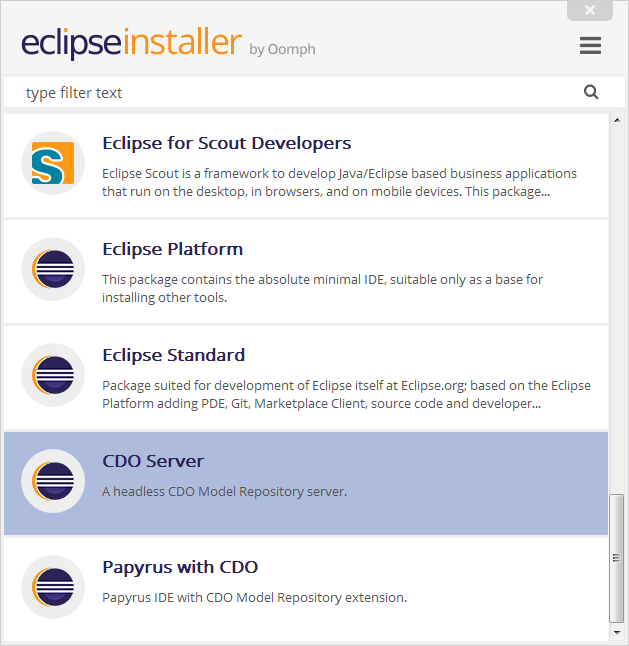
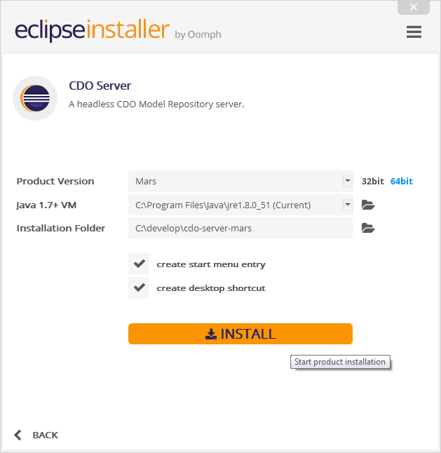
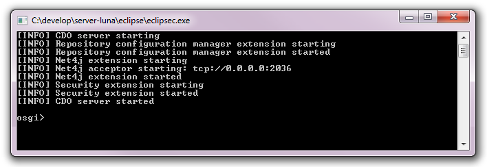
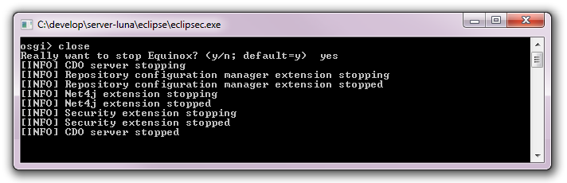

Operating a CDO Server


Operating a CDO Server |
|
Table of Contents
| 1 | Deploying a CDO Server | ||
| 2 | Starting a CDO Server | ||
| 3 | Stopping a CDO Server | ||
The easiest way to deploy a stand-alone CDO Server is to download the latest Eclipse Installer for the target environment:
When the Eclipse Installer is started, select the "CDO Server" application:

On the second page make sure you select the product version (of the CDO Server) that matches your clients' versions:

When the installation has finished the "eclipse" folder under the installation folder contains the cdo-server.xml configuration file, which looks similar to this:
Please note that many repository configuration options can not be changed anymore after the repository has been started the first time.
See Also:
Starting a CDO Server differs a little bit depending on the target environment:
eclipsec.exe file (mind the last "c").
Eclipse.app/Contents/MacOS/eclipse executable from a terminal window.
eclipse executable from a terminal window.
After successful start of the server the console should look similar to this:

Please note that many repository configuration options can not be changed anymore after the repository has been started the first time.
See Also:
To gracefully shut down a running CDO server enter the command "close" into the console and confirm with "yes":

Please note that the DBStore supports automatic crash detection and recovery at startup time. Other store may or may not support similar functionality.